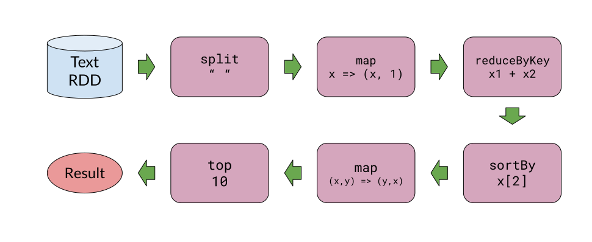
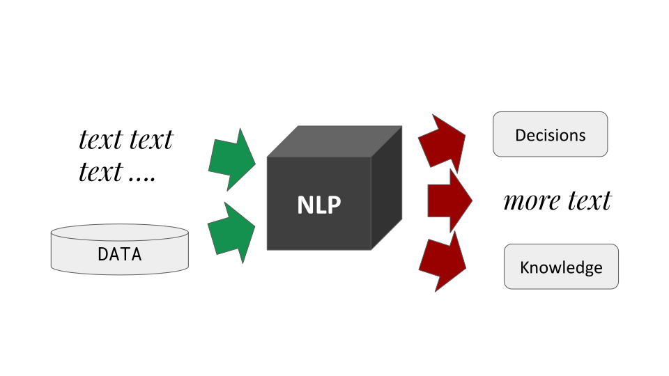
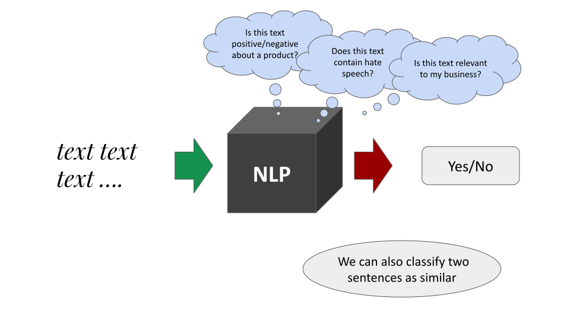
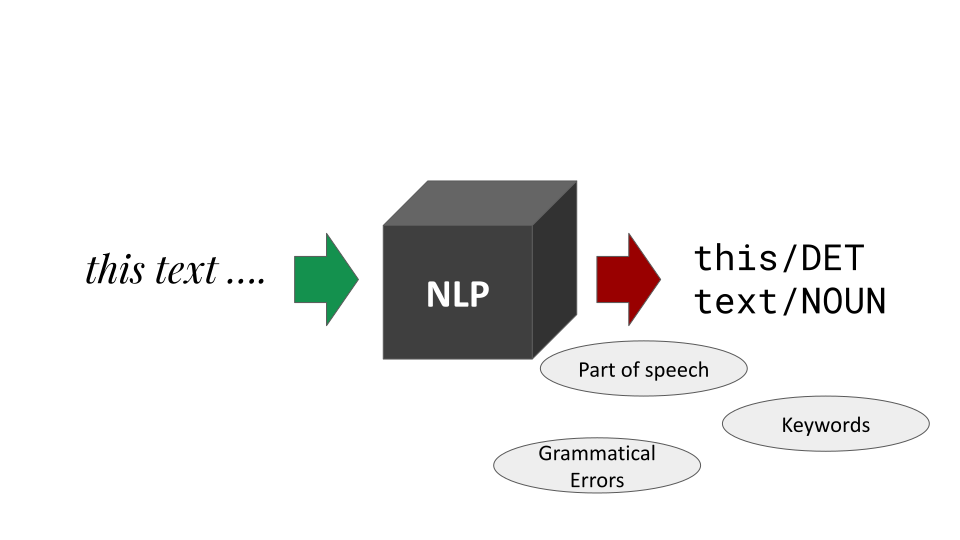
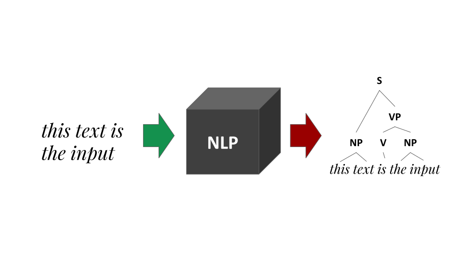
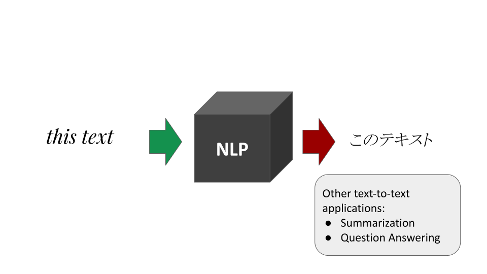
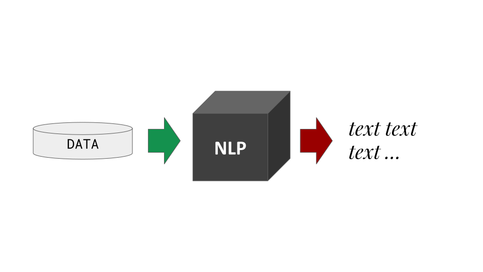
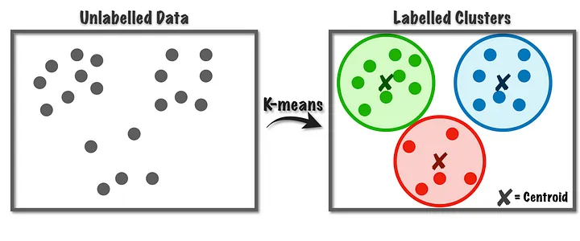
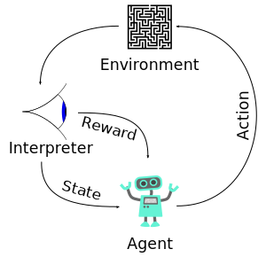

Fundamentals of Data Science
John P. McCrae - University of Galway
Course at ESSLLI 2024

Course Overview
Lectures
- Mon: Fundamentals of Data Science
- Tue: Linguistic Data Science
- Wed: Syntax
- Thu: Semantics (incl. Large Language Models)
- Fri: Multilinguality
Course materials
- Webpage - https://john.mccr.ae/lds-esslli24
- Access to all code and slides through this URL
Hands-on sections
- We will use Python
- Very simple examples, no previous knowledge required
- You will need your laptop to follow along!
About me
- Assistant Professor at University of Galway, Ireland
- Researcher in NLP, Linked Data, Digital Humanities
- More at https://john.mccr.ae
About you
Go to https://www.menti.com/alz9py17xuijWhat is Data Science?
What is Linguistic Data Science?
Natural Language Processing
- Builds system
- No linguistic knowledge needed!
Linguistic Data Science
- Uses machine learning
- Answers linguistic questions
Quantitative (Corpus) Linguistics
- Statistics
- Only corpus data
Data Ingestion
- Structured Data
- such as CSV, databases, XML
- Unstructured Data
- such as text, images, audio
Data Storage
- Cleaning
- Deduplication
- ETL
- Databases
Data Analysis
- Data Exploration
- Predictive Analytics
- Machine Learning
Communication
- Visualisation
- Reporting
- Dashboards
Examples of Data Science
- Customer Analytics
- Supply Chain Optimisation
- Improving Patient Care
Methods for Data Science
Data Storage
SQL
SELECT * FROM table WHERE conditionData is stored in a tables; can be difficult to represent complex data
NoSQL
{
"name": "John McCrae",
"affiliation": "University of Galway",
"email": "john@mccr.ae"
}Flexible data structures; can be difficult to query
Graph Databases
(John McCrae)-[:affiliation]->(University of Galway)
(John McCrae)-[:email]->(john@mccr.ae)More flexibility but can be very slow to query
Scaling Tools
Apache Hadoop
Based on MapReduce
Word List
Map-Reduce
Splitting
aardvark
...
zebra
Map-Reduce
Mapping (word length)
8
...
5
Map-Reduce
Reducing (average)
4.52
Apache Spark
- Based on Resilient Distributed Datasets (RDDs)
- Streaming and batch processing 
Analytic Tools
Jupyter/Colab
- Go to https://colab.research.google.com
- Create a new notebook
Pandas
- Library for data science in Python
- Try the following
import pandas as pd
data = pd.read_csv("https://raw.github" +
"usercontent.com/cs109/2014_data/" +
"master/countries.csv")
data.describe() Other languages
- R - Very popular in statistics
- Julia - New fast language for data science
- Scala - Java-based functional programming
- Rust - Fast and safe systems programming
Visualisation Tools
D3.js
GalleryMatplotlib
import matplotlib.pyplot as plt
plt.hist(data["Region"])Seaborn
GalleryIntroduction to Python and Colab
Basic Python
print("Hello, World!")Variables
x = 5
y = 3
print(x + y)Variables can be used to store data and can be changed at any time
Control Structures
if x > y:
print("x is greater than y")
else:
print("y is greater than x")Python uses indentation to define blocks of code
Functions
def add(x, y):
return x + y
print(add(5, 3))Functions can be used to define reusable code
Batteries included
import math
print(math.sqrt(9))Python has many libraries for common tasks
Natural Language Processing
NLP as a Black Box
Sentiment Analysis
Annotation
Parsing
Machine Translation
Natural Language Generation
Information Extraction

Machine Learning
Supervised Learning

Unsupervised Learning
Source: https://towardsdatascience.com/k-means-a-complete-introduction-1702af9cd8cReinforcement Learning

Source: WikipediaDeep Learning (pretrained models)

Summary
Summary
- Linguistic Data Science is application of data science to linguistics
- Answers linguistic questions using:
- Big Data
- Natural Language Processing
- Machine Learning